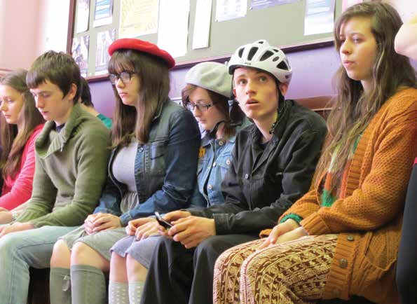

Sharp Focus: Crossing the Divide

This Drogheda premiere will showcase four original short films made by forty talented young people from Belfast, Monaghan and Dundalk. Under the artistic direction of Calipo Theatre Company, Drogheda; these films are a culmination of 24 months of work as part of a cross border project called Sharp Focus: Crossing the Divide, funded by the EU's PEACE III Programme.
Sharp Focus is a film project where teenagers work with established filmmakers on the production of original short films that explore the legacy of conflict in Northern Ireland and the Southern Border Counties. The participants were facilitated to devise their own screenstories, and to star in the films that they created.
In addition to showcasing the films, Calipo will also screen a half hour documentary looking behind the scenes at the creation and development of the project. The Sharp Focus project is produced and managed by Calipo in partnership with the Shankill Women's Centre, Belfast, and supported by Healing Through Remembering and Wave Trauma Centre, Belfast.
Friday 2 May
Venue: Cinemobile, Abbey Car Park
Times: 11:00am, 1:00pm, 7:00pm Fri 2 May
Tickets: Free, booking necessary